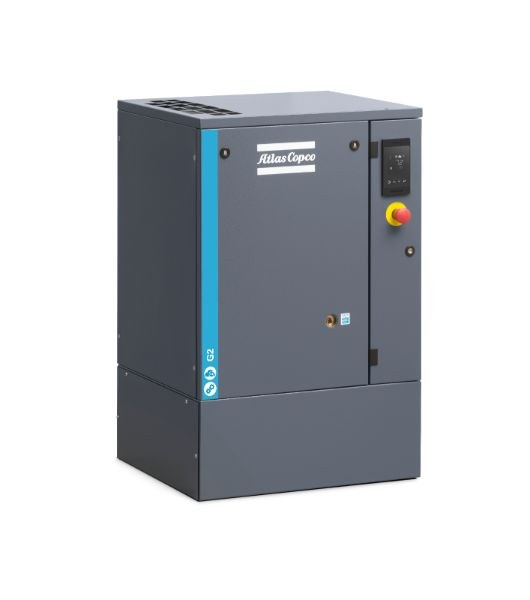
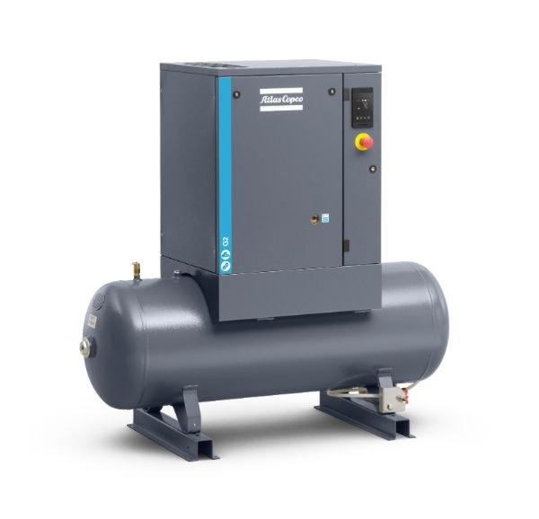
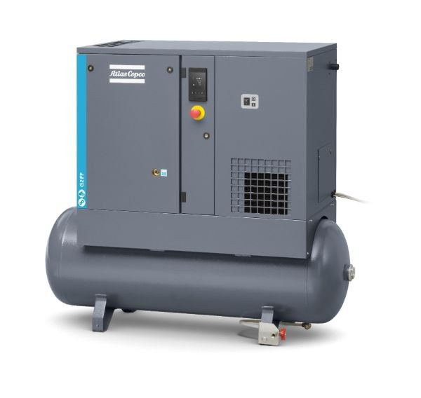
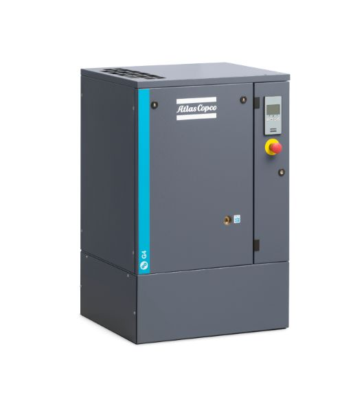
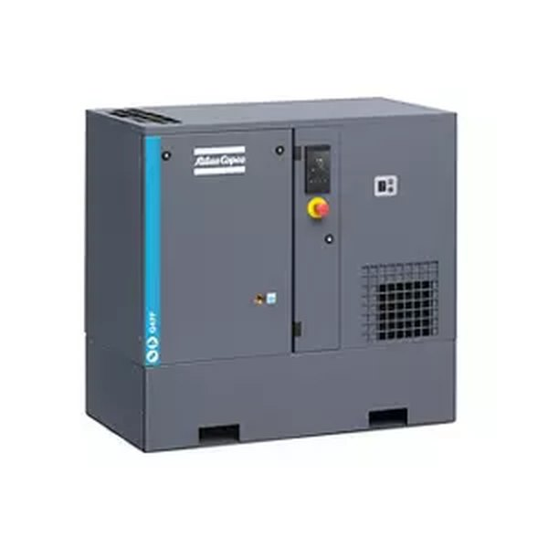
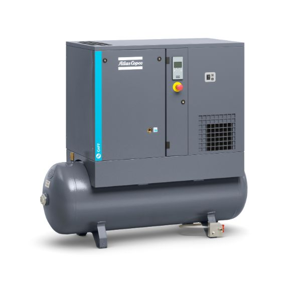
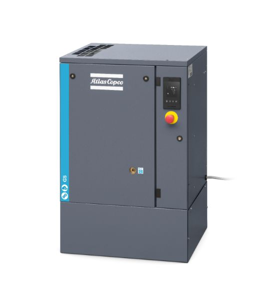
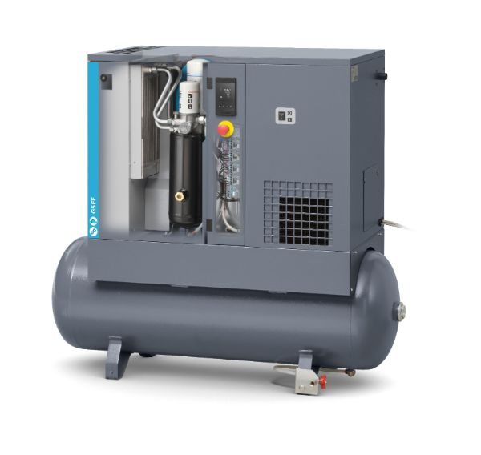
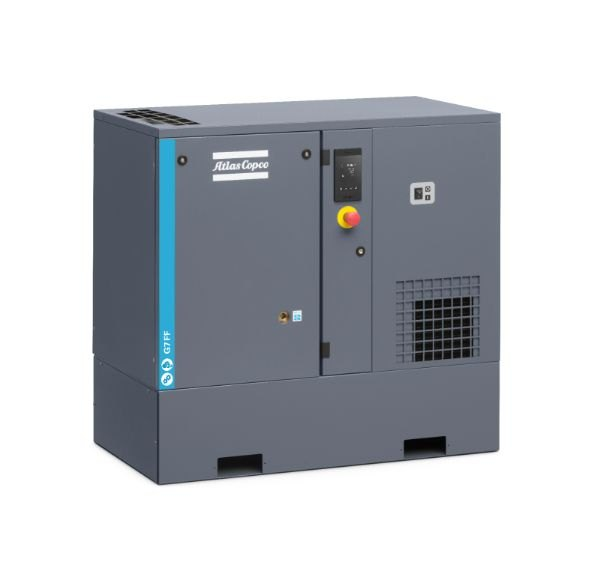
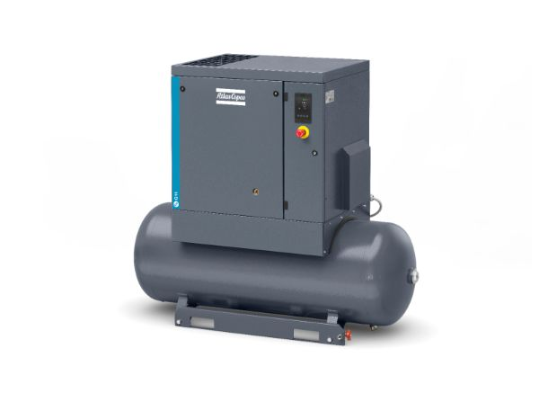

Compresores de tornillo Atlas Copco serie G
23 modelos de 2.2 a 22 kW, sobre bancada o sobre depósito, con o sin secador integrado. Como distribuidor autorizado de Atlas Copco, los vendemos, instalamos y mantenemos desde nuestras sedes en Arequipa, Chala, Juliaca, Lima, Nasca y Trujillo.
Compresores de hasta 4 kW
Para talleres y consumo moderado de aire.

G2 FM2.2 kW, 4.4 L/s a 145 psi
G2 FM FF2.2 kW, 4.4 L/s a 145 psi

G2 TM2.2 kW, 4.4 L/s a 145 psi

G2 TM FF2.2 kW, 4.4 L/s a 145 psi

G4 FM4 kW, 7.9 L/s a 145 psi

G4 FM FF4 kW, 7.9 L/s a 145 psi
G4 TM4 kW, 7.9 L/s a 145 psi

G4 TM FF4 kW, 7.9 L/s a 145 psi
Compresores de 5.5 a 11 kW
Para producción continua en plantas y talleres grandes.

G5 FM5.5 kW, 11.9 L/s a 145 psi
G5 TM5.5 kW, 11.9 L/s a 145 psi

G5 TM FF5.5 kW, 11.9 L/s a 145 psi
G7 FM7.5 kW, 14.7 L/s a 145 psi

G7 FM FF7.5 kW, 14.7 L/s a 145 psi
G7 TM7.5 kW, 14.7 L/s a 145 psi
G7 TM FF7.5 kW, 14.7 L/s a 145 psi

G11 FM11 kW, 19.1 L/s a 181 psi

G11 TM11 kW, 19.1 L/s a 181 psi
Compresores de 15 a 22 kW
Para plantas con alto consumo, construcción y minería.
¿No sabes qué modelo elegir?
Cuéntanos cómo usarás el aire comprimido y te recomendamos el equipo.